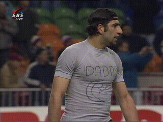

|
Ajax - Roda JC (1-0) 5 februari 2003 |
Vrije trap voor Ajax die niks oplevert.
In de 10 min. scoort Ibrahimovic 1-0.
Filipovic raakte bij de actie die er aan voorafging
geblesseerd.
Roorda is met Trabelsi gebotst welke tijdelijk
het veld uitgaat. Ibrahimovic wordt vervangen
door Mido.
Soetaers schopt een reclamebord kapot :-)
Schwalbenheini Van der Meyde gaat gemakkelijk
neer na een zetje van Sonkaya.
In de tweede helft Van Dijk voor Van Dessel.
Drukte voor het doel van Roorda.
Vicelich wordt vervangen door Cristiano.
Vloet ziet een spannende wedstrijd.
Prima kopkans voor Anastasiou. Roda krijgt
regelmatig aardige kansen.
Serves you right to suffer baby!
Sergio ergert zich terecht dat Galasek die hem
een flinke trap geeft geen geel krijgt.
Vloet ziet hoe de Ajaxkeeper een schot van
Anastasiou stopt.
In de slotfase nog een kopkans voor Sonkaya.
De tweede helft was voor Roda, maar de vroege
achterstand kon niet meer ongedaan gemaakt
worden.
Anastasiou en Sonkaya evalueren de gemiste
kansen.

Dadas?